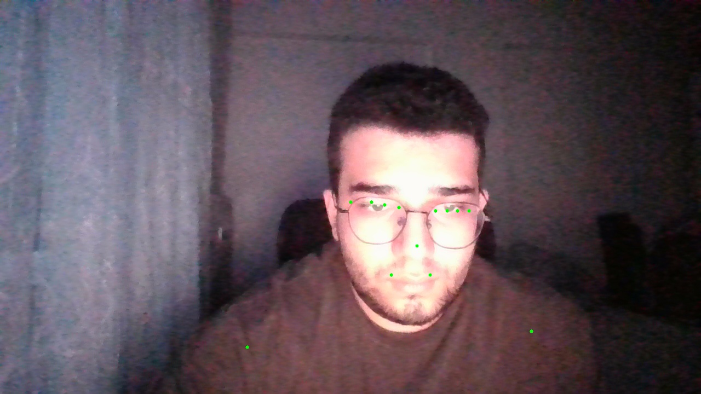
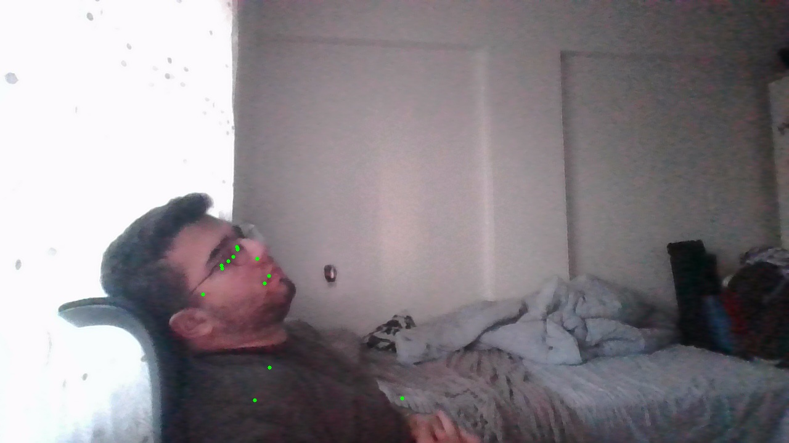
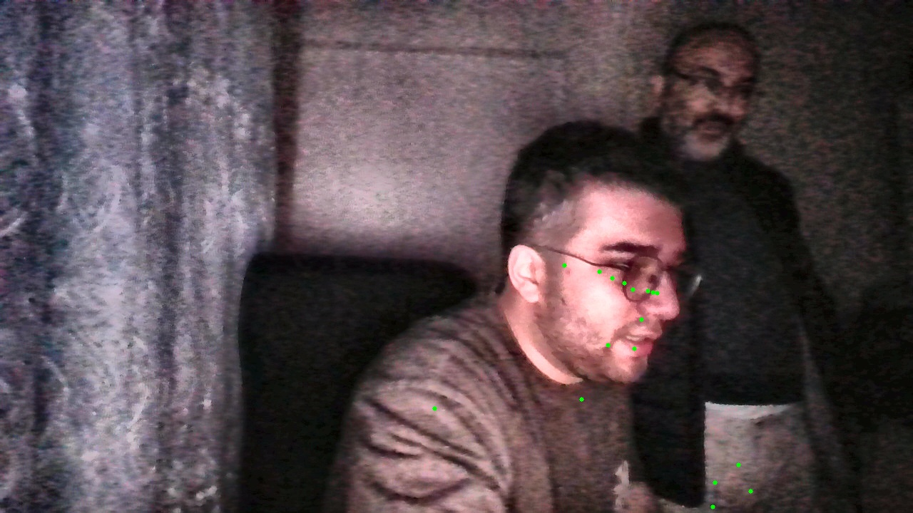
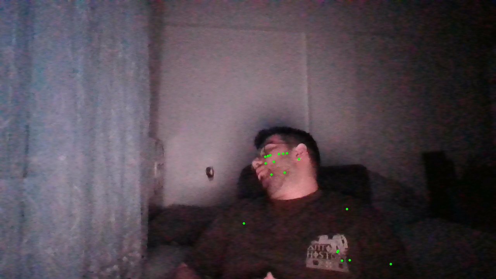
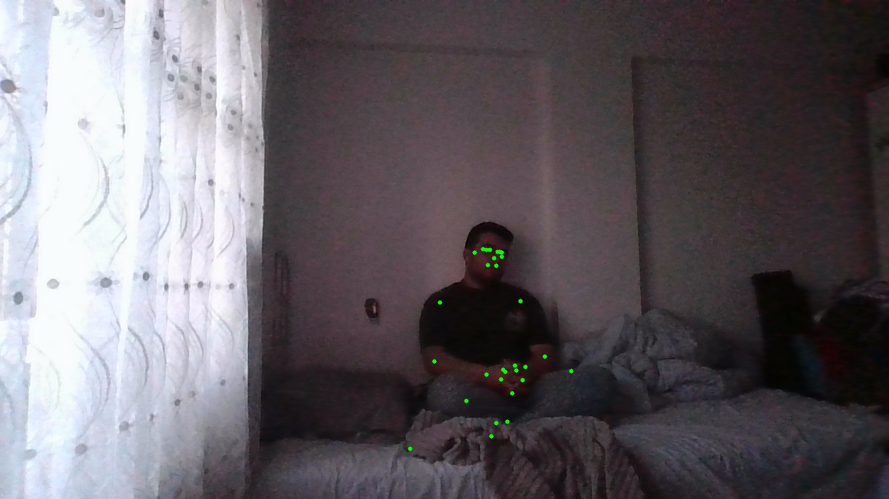
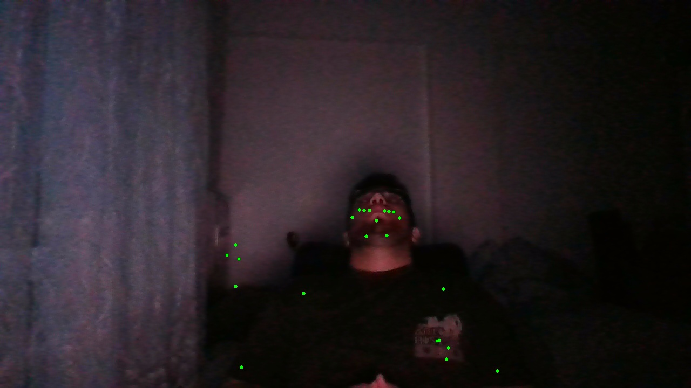
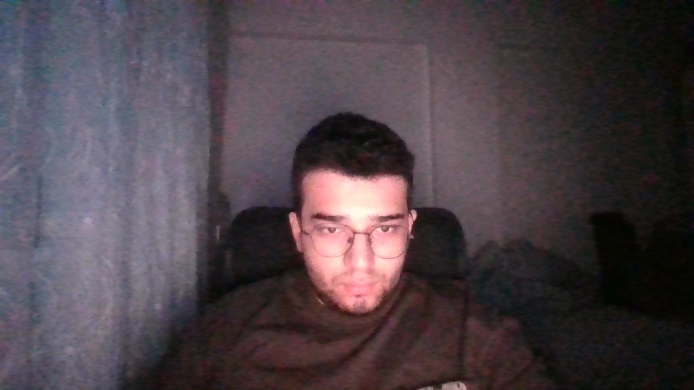
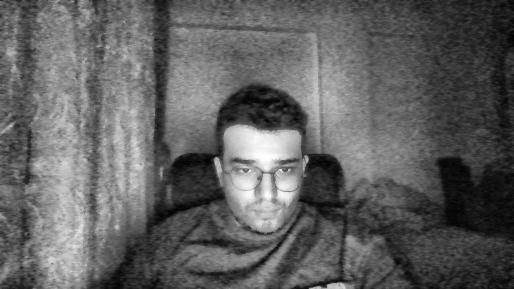

Diger sistemler kisinin tam karsida, hareketsiz oturmasini istiyor. Ama gercekte guvenlikci hareket eder, farkli koltuklara oturur.
Gece nobetlerinde isik azalinca sistem goruntuyu isleyemiyor. Ama uyuklama en cok gece vardiyalarinda oluyor.
Gorevli her zaman masasinda degil. Odanin diger ucundaki koltuktaki oturuyor olabilir.
Goz kirpsa alarm caliyor ama gercek uyuklamada sessiz kaliyor. Hassasiyet ayari yok.







Standart kameranin ham goruntusu — karanlik, detaylar kayip

CLAHE + kontrast iyilestirme ile detaylar ortaya cikarildi
Nasil calisiyor? Sistem her kareyi analiz eder, isik seviyesi dusukse otomatik olarak goruntu iyilestirme filtresi uygular. Bu filtre insan gozune gore degil, yapay zekanin algilamasina gore optimize edilmistir.
Goz kapagi acikligini saniyede 30 kez olcer. Kirpisma ile gercek kapanmayi ayirt eder.
Basin 3 boyutlu acisini hesaplar — one egilme, yana yatma. Bas dusmeye baslayinca sinyal verir.
33 noktali vucut iskeleti uzerinden oturma pozisyonunu siniflar. Uzak mesafede bile calisir.
Vucuttaki en kucuk hareketi bile olcer. Uzun sureli hareketsizlik uykunun habercisidir.
Yuz gorunmez oldugunda son veriler 60 saniyeye kadar hafizada tutulur.
3 dakika boyunca kimse gorulmezse otomatik uyari verilir.
Kameradan kare al, karanliksa iyilestir
Insanlari tespit et, 33 noktali iskelet cikar
Yakinsa 478 noktali yuz haritasi cikar
Pozisyon sinifla, hareket olc
Tum sinyalleri birlestir, 0-1 puan uret
Durumu belirle, gerekirse alarm ver
Neden 6 adim? Tek bir olcum yanlis sonuc verebilir. Ama goz kapali + bas dusmus + hareketsiz + bozuk oturma hep bir arada ise — bu kesinlikle uyku demektir.
Ornek: Biri gozlerini 1sn kapatti — alarm calmaz. Ama 3sn boyunca gozler kapali + bas dusmus + hareketsiz ise → UYUYOR.
| Ozellik | Diger Sistemler | SleepGuard |
|---|---|---|
| Kameraya bakmak zorunlu mu? | Evet, tam karsi | Hayir, her acida |
| Uzak mesafe (2-4m) | Desteklemiyor | Vucut analizi ile |
| Yuz gorunmezse? | Analiz durur | Hafiza + vucut modu |
| Dusuk isik / gece | Calismiyor | Otomatik iyilestirme |
| Yan donuk kisi | Algilanmiyor | Iskelet ile algilanir |
| Kalibrasyon | Her seferinde manuel | Otomatik arka planda |
| Alan terk tespiti | Yok | 3dk sonra uyari |
| Birden fazla kisi | Sadece 1 kisi | 5 kisiye kadar |
| Sahte alarm onleme | Basit esik | Sureli gecis sistemi |
| Donanim | Ozel donanim | USB kamera yeterli |
Tamamen cevrimdisi. Veriler disari cikmaz. Mahremiyet korunur.
USB kamera (640x480) · Intel i5 · 4 GB RAM · Windows/Linux
Full HD (1080p) · Intel i7 · 8 GB RAM · IR gece gorush kamera
Kisi yan donsun, egsin, kalksin, otursun — sistem her durumda calisir.
Goz, bas, vucut, hareket — hepsini birlikte degerlendiriyor.
Kalibrasyon beklemeden varsayilan degerlerle hemen baslar.
Ne gereksiz alarm verir, ne gercek uyumayi kacir.
Sorulariniz icin haziriz.
2026